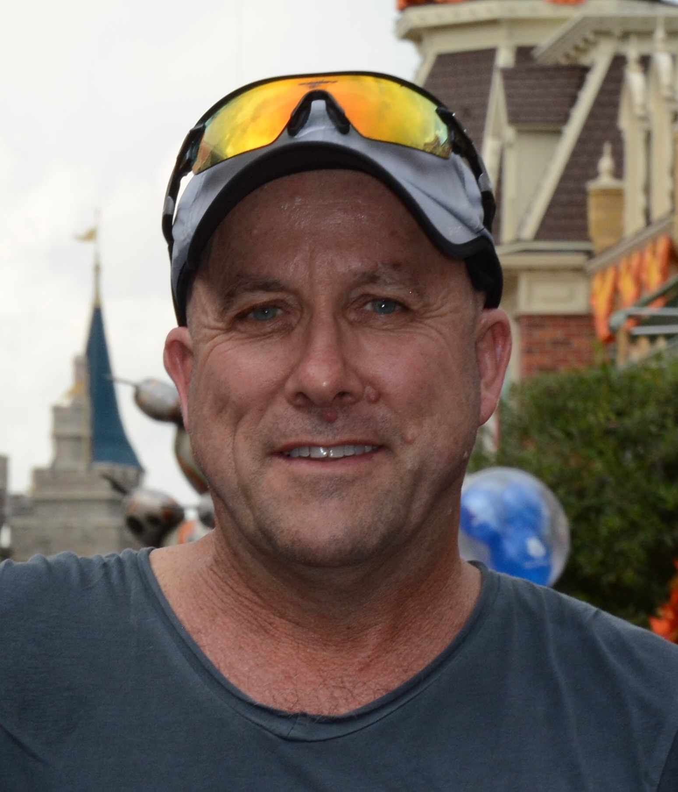
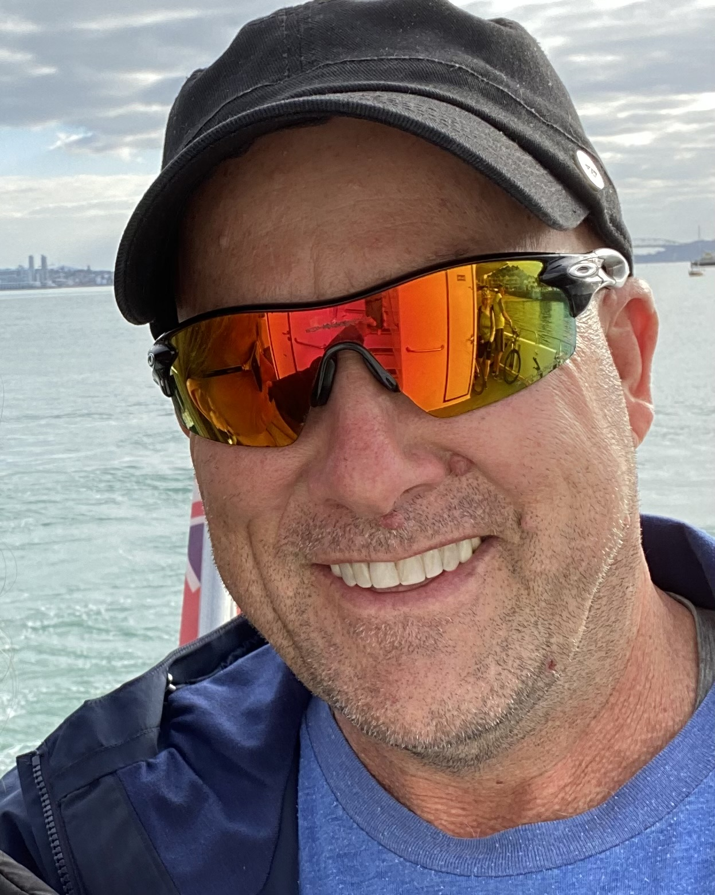

Shoulder
Rotator cuff tears, instability, frozen shoulder, arthritis and more.
Browse conditions & treatmentsSpecialist care for the shoulder, elbow, wrist and hand, and sports knee conditions, with clear advice and a treatment plan shaped around you.

From a recent injury to a condition that has gradually become more limiting, the first step is understanding the problem and discussing your options.
Rotator cuff tears, instability, frozen shoulder, arthritis and more.
Browse conditions & treatmentsTendon injuries, tennis and golfer’s elbow, nerve problems, arthritis and fractures.
Browse conditions & treatmentsTFCC and ligament injuries, fractures, ganglia, nerve compression and arthritis.
Browse conditions & treatmentsTrigger finger, Dupuytren’s disease, arthritis, tendon injuries and finger fractures.
Browse conditions & treatmentsMeniscal and ligament injuries, kneecap problems, tendon conditions and sports-related knee pain.
Browse conditions & treatments
I grew up on a farm in the King Country. It was a practical upbringing, with farm work and life outdoors part of the everyday routine. Those rural roots remain an important part of who I am.
My parents later moved north to Mangawhai, shortly before my father died. Mangawhai has remained a place of family connection for me. Through my mother, I also have whakapapa connections to Ngāi Tahu.
I trained in medicine at the University of Auckland and went on to specialise in orthopaedic surgery. I undertook fellowship training in Perth under world-class upper limb and knee surgeons.
My background also includes aid work in Cambodia during the conflict, with the Australian Red Cross.
I am a consultant orthopaedic surgeon at North Shore Hospital and also work in private practice in Auckland. My practice focuses on the shoulder, elbow, wrist and hand, as well as sports knee conditions. I am also actively involved in research and implant design. I enjoy the practical nature of orthopaedics and the difference treatment can make to someone’s everyday life, whether that means returning to work, managing comfortably at home or getting back to an activity they enjoy.
I was instrumental in establishing the wrist and hand unit, as well as the shoulder and elbow unit, at North Shore Hospital. Teaching is a regular part of my work, and I am involved in the education and training of junior doctors, nurses and hand therapists.
I want patients to understand what is causing their problem and what can reasonably be done about it. That means taking time to explain the options, including when surgery may help and when another approach may be more appropriate.
What to expect at your appointmentMy wife is a hand therapist, and our daughter is a junior doctor. Medicine is a familiar part of family life, but there is plenty outside it too. I enjoy diving, ocean swimming, flying, paragliding, cycling and bikepacking, and I train regularly at the gym. Cycling has taken me through some remarkable parts of New Zealand, and time outdoors remains a large part of my life.

You should leave your consultation with a better understanding of your condition and the next steps in your care.
Discuss your symptoms, previous treatment and the activities that matter to you.
Review the examination and available imaging, and discuss suitable non-operative and surgical options.
Agree on the next steps, including further investigations, treatment or rehabilitation where appropriate.
Bring your referral, an up-to-date medication list and any relevant scan reports. If your injury is covered by ACC, bring your claim details too.
A timeline of your symptoms, details of previous treatment, relevant medical history and a list of questions you would like to discuss.
Bring any relevant imaging reports and let the practice know where your X-rays, ultrasound, CT or MRI were performed so access can be arranged.
A consultation is an assessment. Treatment options and whether an operation is appropriate can be discussed after your condition has been reviewed.
Have your insurer or ACC claim information available. Cover, approvals and any personal costs need to be confirmed for your individual circumstances.
Explore information about orthopaedic conditions, treatments and recovery on OrthoInfo, the patient education website of the American Academy of Orthopaedic Surgeons (AAOS).
Visit AAOS OrthoInfo (opens in a new tab)This external resource provides general information. Your individual treatment and rehabilitation plan will be discussed at your consultation.
For appointments, referrals and clinic arrangements, please contact Hannah Bowden, Peter’s secretary and the point of contact for all referrals.
Open our simple referral form, complete it and save or print a copy to send to Hannah through your usual referral channel. HealthLink EDI: orthoref.
Open referral formFor urgent appointment requests, please phone Hannah.
Referring clinicians can send electronic referrals via HealthLink using EDI orthoref. Please contact Hannah for referral and appointment enquiries.
View Peter’s Healthpoint listing (new tab)Consultations are by appointment. Hannah will confirm the location and time of your appointment. Please check your booking details before travelling.
ShoreCare Orthopaedic Institute
Canopy Imaging BuildingHenderson
131 Lincoln RoadSpecialist fracture clinic
74 Taharoto RoadWarkworth Medical Centre
11 Alnwick StreetKaipara Radiology
11 Centreway RoadOpening soon — contact Hannah for availability.
View map (new tab)